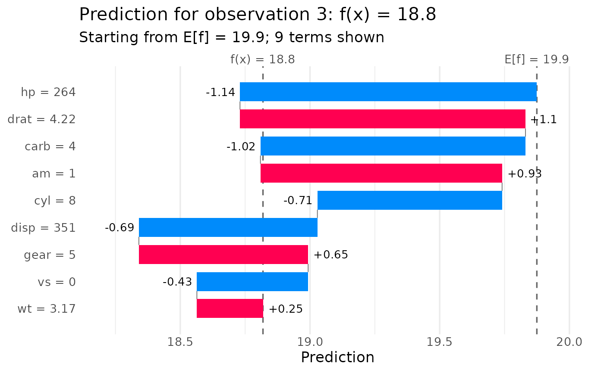
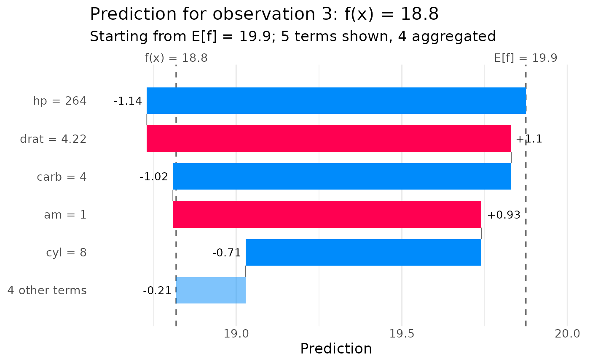

Shows how the prediction for one observation is built from the components of
the decomposition: starting at the intercept E[f], each bar adds one main or
interaction term \(m_S\) until the prediction f(x) is reached. Unlike
plot_shap_decomposition(), which splits interaction terms among their
features, every term is its own bar.
Usage
plot_waterfall(
object,
id,
threshold = NULL,
max_terms = 10L,
max_interaction = NULL,
class = NULL
)Arguments
- object
Object of class
glex.- id
(
integer(1)) Row ofobject$xto explain.- threshold
(
numeric(1): NULL) Terms with an absolute value at or below this are aggregated into one "other terms" bar. The defaultNULLuses 2.5% of the largest absolute term, so negligible terms do not crowd the plot; set0to show all terms.- max_terms
(
integer(1): 10) Maximum number of terms shown individually, keeping the largest in absolute value. The rest are aggregated.- max_interaction
(
integer(1): NULL) Terms of a higher degree are aggregated.- class
(
character(1): NULL) For multiclass objects, the class whose prediction is shown. Required for multiclass objects.
Value
A ggplot object.
Details
Bars of interaction terms are more transparent the higher their degree. For
constrained decompositions (see glex()), what the dropped terms account for
is shown as a final "remainder (constrained)" bar, so the plot still ends at
the model's prediction.
The layout follows the waterfall plots of the Python 'shap' library and of the R package 'shapviz', which show SHAP values (one bar per feature) rather than the terms of a functional decomposition.
References
Lundberg, S. M. & Lee, S.-I. (2017). A unified approach to interpreting model predictions. Advances in Neural Information Processing Systems 30. https://proceedings.neurips.cc/paper/2017/hash/8a20a8621978632d76c43dfd28b67767-Abstract.html
Mayer, M. (2026). shapviz: SHAP Visualizations. R package. https://CRAN.R-project.org/package=shapviz
See also
Other Visualization functions:
plot.glex(),
plot.glex_vi(),
plot_force(),
plot_pdp(),
plot_shap_decomposition()
Examples
library(randomPlantedForest)
set.seed(1)
rp <- rpf(mpg ~ ., data = mtcars[1:26, ], max_interaction = 2)
gl <- glex(rp, mtcars[27:32, ])
plot_waterfall(gl, id = 3)

plot_waterfall(gl, id = 3, max_terms = 5)
